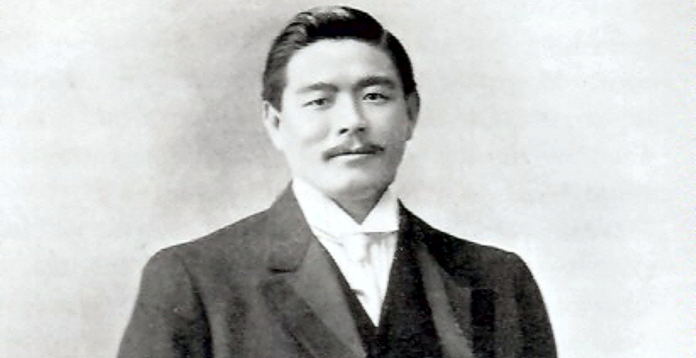
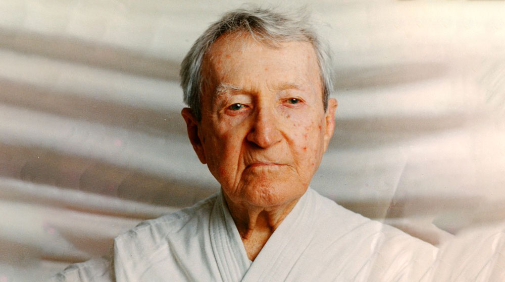
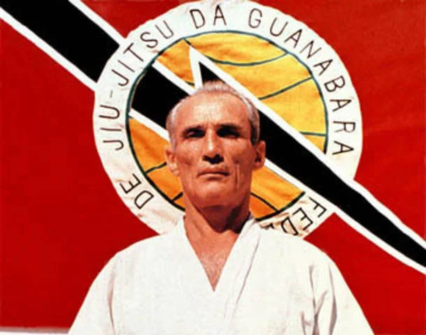
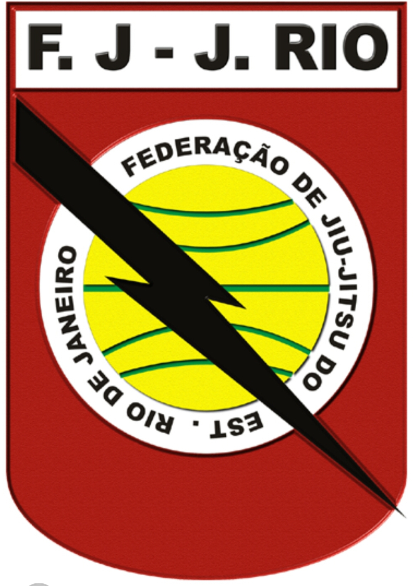

Você é iniciante no Jiu-Jitsu?
Você está no lugar certo, aqui você aprenderá como funciona a graduação no jiu-jitsu, sua história, posições de lutas e até mesmo termos do meio.

Qual é a História do Jiu-Jitsu?
O Jiu-Jitsu é uma arte marcial milenar, conhecida como "arte suave", cuja origem é atribuída a monges budistas na Índia ou à China, chegando ao Japão com a expansão do budismo. A versão mais aceita, porém, é que surgiu no Japão há mais de 3600 anos, sendo aprimorado por samurais.
Em 1904, Mitsuyo Maeda, o Conde Koma, iniciou uma jornada para difundir o Jiu-Jitsu pelo mundo. Após percorrer diversos países, chegou ao Brasil em 1914, estabelecendo-se em Belém do Pará, onde ensinou a arte a Carlos Gracie, filho de Gastão Gracie.
Carlos, encantado pela técnica, passou a treinar e ensinar Jiu-Jitsu, influenciando seu irmão Hélio Gracie, que adaptou os golpes à sua estrutura física mais frágil, criando um estilo próprio e eficiente. Hélio se tornou uma peça chave na difusão da arte.
Ao longo dos anos, os irmãos Gracie e seus alunos desafiaram outras artes marciais e conquistaram notoriedade. Com o tempo, o Jiu-Jitsu ganhou força no Brasil, sendo institucionalizado com a criação da Federação de Jiu-Jitsu da Guanabara em 1967.
Ao longo dos anos, os irmãos Gracie e seus alunos desafiaram outras artes marciais e conquistaram notoriedade. Com o tempo, o Jiu-Jitsu ganhou força no Brasil, sendo institucionalizado com a criação da Federação de Jiu-Jitsu da Guanabara em 1967.
Graduação no Jiu-Jitsu
O sistema de faixas nas artes marciais japonesas foi criado por Jigoro Kano, fundador do Judô. Ele adaptou esse sistema de um jogo japonês que distinguia iniciantes de profissionais. No Jiu-Jitsu, isso se traduz em "Kyu" (faixas) e "Dan" (graus). O objetivo desse sistema é padronizar o ensino e facilitar a organização dos campeonatos. Todos os iniciantes começam na faixa branca, e a partir daí a graduação varia conforme a idade.
Faixas para Crianças (até 15 anos)
A sequência é: Branca -> Cinza e Branca -> Cinza -> Cinza e Preta -> Amarela e Branca -> Amarela -> Amarela e Preta -> Laranja e Branca -> Laranja -> Laranja e Preta -> Verde e Branca -> Verde -> Preta.
Faixas para Adultos (16 anos ou mais)
A ordem é: Branca -> Azul -> Roxa -> Marrom -> Preta -> Vermelha e Preta (7º grau), Vermelha e Branca (8º grau) e Vermelha (9º e 10º grau — este último apenas para os pioneiros).
Sistema de Graus
Cada faixa até a marrom pode ter até 4 graus (faixa lisa + 4 "esparadrapos"). A atribuição é feita pelo professor, e nem sempre é necessário completar todos os graus para trocar de faixa. A faixa preta possui 6 graus antes da vermelha e preta. Os três primeiros são obtidos com intervalos de 3 anos e os seguintes a cada 5 anos. Do 7º ao 9º grau, o tempo aumenta para 7 e 10 anos de permanência.
Idade e Tempo Mínimo
- Faixa Amarela: mínimo 7 anos
- Laranja: mínimo 10 anos
- Verde: mínimo 13 anos
- Azul ou Roxa: mínimo 16 anos
- Marrom: 18 anos
- Preta: 19 anos
- Vermelha e Preta: 50 anos
- Vermelha e Branca: 57 anos
- Vermelha: 67 anos
A partir da faixa preta, os tempos para obter novos graus passam a ser obrigatórios e definidos pela CBJJ. Por exemplo, o 1º grau vem após 3 anos na faixa preta lisa, os próximos seguem com intervalos de 3 a 10 anos até o nono grau. O décimo grau é exclusivo para os pioneiros do Jiu-Jitsu, como os irmãos Gracie. Um praticante que seguir todos os critérios pode atingir esse nível aos 67 anos de idade.
Posições Básicas no Jiu-Jitsu
O Jiu-Jitsu é uma arte marcial focada em controle, submissão e autodefesa. Dominar suas técnicas básicas é essencial para qualquer iniciante.
Posições Básicas
- Guarda: Posição defensiva com o praticante de costas, usando as pernas para controlar o oponente.
- Montada: Posição dominante por cima do oponente, ideal para ataques.
- Costas: Controle pelas costas do adversário, excelente para aplicar finalizações.
Submissões
- Estrangulamentos: Técnicas para sufocar, como o mata-leão e o uso da lapela.
- Chaves de braço: Manipulação das articulações, com variações como a chave reta e triangulada.
Golpes Essenciais
- Quedas: Técnicas para derrubar o adversário, como o O-soto-gari e Uchi-mata.
- Passagem de guarda: Superar a guarda do oponente, com técnicas simples ou com gancho.
- Montada ofensiva: Da montada, é possível aplicar armlocks e estrangulamentos.
Glossário do Jiu-Jitsu
Conheça os principais termos utilizados no Jiu-Jitsu para facilitar sua jornada na arte suave.
- Guarda: Posição defensiva onde o praticante usa as pernas para controlar o oponente.
- Passagem de Guarda: Técnica para superar a guarda do adversário.
- Mata-Leão: Estrangulamento aplicado pelas costas do adversário.
- Armlock: Chave de braço usada para forçar a submissão.
- Kimura: Chave de ombro que utiliza alavancas para imobilizar o adversário.
- Oss: Saudação tradicional usada no Jiu-Jitsu e outras artes marciais.
Academias de Jiu-Jitsu
Academias renomadas para treinar e evoluir no Jiu-Jitsu.

Gracie Barra
Fundador: Carlos Gracie Jr.
Origem: Fundada em 1986, no Rio de Janeiro.
Destaques: Uma das maiores redes de academias de Jiu-Jitsu do mundo, com foco na padronização do ensino e expansão global.
Filosofia: Educação, disciplina e desenvolvimento pessoal. Muito voltada para o esporte como ferramenta de transformação.
Carlson Gracie Team
Fundador: Carlson Gracie
Origem: Década de 60, no Rio de Janeiro.
Destaques: Conhecida por seu Jiu-Jitsu mais agressivo e voltado para o MMA.
Filosofia: Enfatiza força, pressão e espírito competitivo. Produziu grandes nomes do MMA e do Jiu-Jitsu.
Alliance Jiu-Jitsu
Fundadores: Romero "Jacaré" Cavalcanti, Fabio Gurgel, Alexandre Paiva
Origem: Fundada em 1993, em São Paulo.
Destaques: Uma das equipes mais vitoriosas em campeonatos mundiais de Jiu-Jitsu.
Filosofia: Excelência técnica, competição e forte sistema de ensino com metodologia estruturada.
Gracie Humaitá
Fundador: Hélio Gracie
Origem: Criada no bairro Humaitá, no Rio de Janeiro.
Destaques: Foco em autodefesa e nos princípios clássicos do Gracie Jiu-Jitsu.
Filosofia: Preserva os ensinamentos tradicionais, valorizando a defesa pessoal antes da competição esportiva.
GFTeam (Grappling Fight Team)
Fundador: Júlio César Pereira
Origem: Evoluiu a partir da Universidade Gama Filho, no Rio de Janeiro.
Destaques: Equipe forte em competições, com atletas de alto nível mundial.
Filosofia: Foco no desenvolvimento técnico, espírito de equipe e formação de atletas de elite.